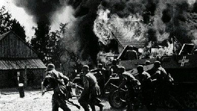
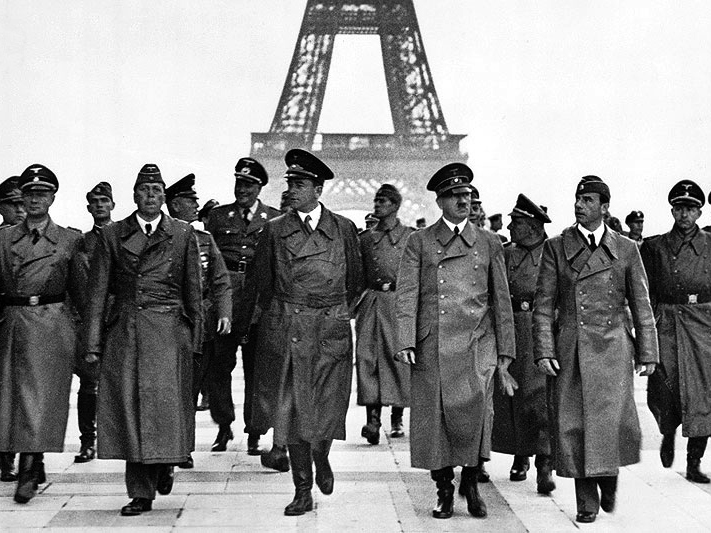

La Segunda Guerra Mundial empieza oficialmente en 1939 aunque los siguientes hechos históricos van a provocarla.
Proyecto de Bilingüismo
La segunda Guerra Mundial
1933-1938

En 1933, Hitler se proclama Führer en Alemania. Va a prometer un país más grande y mejor armado. Compra numerosas armas y forma un ejército gigantesco. Se alía con Mussolini y Franco. Sin embargo, el general Franco no participará en la Segunda Guerra Mundial ya que España se encuentra muy débil tras la Guerra Civil.
En 1938, Adolf Hitler invade Austria. Después, obtiene una parte de Checoslovaquia. Europa no reacciona porque ningún país desea la guerra.
1939-1941
Pero en 1939, cuando Alemania se alía con Rusia e invade Polonia. Francia e Inglaterra declaran la guerra el 3 de septiembre.
Alemania, Italia y Japón forman las potencias del Eje; Francia, Inglaterra y Estados Unidos son los Aliados. Sin embargo, el 27 de septiembre de 1939, Polonia es invadida y se reparte entre Alemania y Rusia.
El 10 de mayo de 1940, Hitler ataca Francia entrando por Bélgica y Holanda. Llega a París el 14 de junio de 1940. El ejército francés no puede contener el ataque y las fuerzas alemanas llegan hasta Lyon. La población militar y civil huye hacia el sur de Francia, es el éxodo. Es una gran derrota para Francia, que no consigue luchar. La República desaparece y el Mariscal Pétain pide el armisticio y lo firma el 22 de junio de 1940.
Inglaterra se encuentra sola contra Alemania. Winston Churchill intenta encontrar apoyos en los dirigentes europeos. El general francés De Gaulle, que está en Inglaterra, hace un llamamiento a la población a través de la radio, pidiendo a los franceses que resistan; es el principio de la Resistencia.
En abril de 1941, Hitler invade Yugoslavia y a continuación Grecia. El ejército alemán intenta posteriormente invadir la URSS pero el frío intenso les impide avanzar y deben abandonar la misión.
 En agosto de 1941, el primer ministro Churchill y el presidente Roosevelt de los Estados Unidos se reúnen para establecer y firmar la Carta del Atlántico.
En agosto de 1941, el primer ministro Churchill y el presidente Roosevelt de los Estados Unidos se reúnen para establecer y firmar la Carta del Atlántico.
El 7 de diciembre de 1941, Japón, aliado con Alemania, ataca vía aérea Pearl Harbour, una base militar americana. Los Estados Unidos declaran la guerra aliándose con los ingleses y los rusos. Es en este momento cuando la guerra se hace mundial.
Actividad
Copia estas preguntas en tu cuaderno y haz las actividades.
1) Redacta una breve biografía del dictador Adolf Hitler.
2) ¿Qué es la Carta del Atlántico? Busca información.
3) ¿Qué es un armisticio?
Obra publicada con Licencia Creative Commons Reconocimiento Compartir igual 4.0